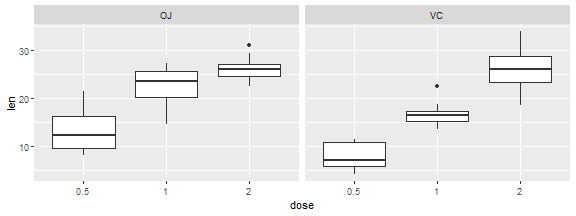

library(dplyr)
library(ggplot2)
This report will explore ToothGrowth Data and whether different delivery methods and doses are statistically related to differences in tooth growth rate. Confidence Intervals and Hypothesis tests will be used to see if there is significance difference.
"The response is the length of odontoblasts (cells responsible for tooth growth) in 60 guinea pigs. Each animal received one of three dose levels of vitamin C (0.5, 1, and 2 mg/day) by one of two delivery methods, orange juice or ascorbic acid (a form of vitamin C and coded as VC)."" (https://stat.ethz.ch/R-manual/R-devel/library/datasets/html/ToothGrowth.html)
Null hypothesis: The average tooth growth is no different regardless of dose or delivery method used.
\(H_o: \mu_o = \mu_a\), \(H_a: \mu_o \neq \mu_a\)
The data is structured in the following way.
df <- ToothGrowth
head(df)
## len supp dose
## 1 4.2 VC 0.5
## 2 11.5 VC 0.5
## 3 7.3 VC 0.5
## 4 5.8 VC 0.5
## 5 6.4 VC 0.5
## 6 10.0 VC 0.5
num.NA.obs <- length(df[complete.cases(df) == FALSE,]$len)
No data quality issues were detected. There are 0 missing or non-number values.
#aggregate to see differences
ag.mean.df <- aggregate(.~supp+dose, df, mean)
ag.mean.df <- ag.mean.df %>%
rename(mean.length = len)
ag.mean.df$mean <- round(ag.mean.df$mean, digits = 2)
ag.sd.df <- aggregate(.~supp+dose, df, sd)
ag.sd.df <- ag.sd.df %>%
rename(sd.length = len)
ag.sd.df$sd <- round(ag.sd.df$sd, digits = 2)
ag.mean.sd <- inner_join(ag.mean.df,ag.sd.df)
ag.mean.sd <- ag.mean.sd[with(ag.mean.sd, order(supp, dose)),]
print(ag.mean.sd)
## supp dose mean.length mean sd.length sd
## 1 OJ 0.5 13.23 13.23 4.459709 4.46
## 3 OJ 1.0 22.70 22.70 3.910953 3.91
## 5 OJ 2.0 26.06 26.06 2.655058 2.66
## 2 VC 0.5 7.98 7.98 2.746634 2.75
## 4 VC 1.0 16.77 16.77 2.515309 2.52
## 6 VC 2.0 26.14 26.14 4.797731 4.80
The variance of the different doses and delivery methods are not consistent as the table shows below. This will affect our confidence interval and p-value calculation method - the Two Sample Welch t-test will be used.
This is further confirmed by graphing the distribution of values.
df$dose <- as.factor(df$dose)
a <- ggplot(df, aes(x=dose, y=len)) + geom_boxplot() +
facet_grid(.~supp)
plot(a)

Data is subsetted into groups.
small.dose.len <- df %>%
filter(len, dose == 0.5)
med.dose.len <- df %>%
filter(len, dose == 1)
high.dose.len <- df %>%
filter(len, dose == 2)
OJ.small.len <- small.dose.len %>%
filter(len, supp == "OJ")
VC.small.len <- small.dose.len %>%
filter(len, supp == "VC")
OJ.med.len <- med.dose.len %>%
filter(len, supp == "OJ")
VC.med.len <- med.dose.len %>%
filter(len, supp == "VC")
OJ.high.len <- high.dose.len %>%
filter(len, supp == "OJ")
VC.high.len <- high.dose.len %>%
filter(len, supp == "VC")
A two-tailed 95% confidence interval will be used since the hypothesis are as follows
\(H_o: \mu_o = \mu_a\), \(H_a: \mu_o \neq \mu_a\)
Therefore, \(\alpha=0.025\)
The delivery methods were compared against each other at different doses.
#OJ 0.5 vs VC 0.5
t.test(len ~ supp, data = rbind(OJ.small.len, VC.small.len))
##
## Welch Two Sample t-test
##
## data: len by supp
## t = 3.1697, df = 14.969, p-value = 0.006359
## alternative hypothesis: true difference in means is not equal to 0
## 95 percent confidence interval:
## 1.719057 8.780943
## sample estimates:
## mean in group OJ mean in group VC
## 13.23 7.98
#OJ 1 vs VC 1
t.test(len ~ supp, data = rbind(OJ.med.len, VC.med.len))
##
## Welch Two Sample t-test
##
## data: len by supp
## t = 4.0328, df = 15.358, p-value = 0.001038
## alternative hypothesis: true difference in means is not equal to 0
## 95 percent confidence interval:
## 2.802148 9.057852
## sample estimates:
## mean in group OJ mean in group VC
## 22.70 16.77
#OJ 2 vs VC 2
t.test(len ~ supp, data = rbind(OJ.high.len, VC.high.len))
##
## Welch Two Sample t-test
##
## data: len by supp
## t = -0.046136, df = 14.04, p-value = 0.9639
## alternative hypothesis: true difference in means is not equal to 0
## 95 percent confidence interval:
## -3.79807 3.63807
## sample estimates:
## mean in group OJ mean in group VC
## 26.06 26.14
The dose were compared against each other using the same delivery methods.
#OJ 0.5 vs OJ 0.1
t.test(len ~ dose, data = rbind(OJ.small.len, OJ.med.len))
##
## Welch Two Sample t-test
##
## data: len by dose
## t = -5.0486, df = 17.698, p-value = 8.785e-05
## alternative hypothesis: true difference in means is not equal to 0
## 95 percent confidence interval:
## -13.415634 -5.524366
## sample estimates:
## mean in group 0.5 mean in group 1
## 13.23 22.70
#OJ 1 vs OJ 2
t.test(len ~ dose, data = rbind(OJ.med.len, OJ.high.len))
##
## Welch Two Sample t-test
##
## data: len by dose
## t = -2.2478, df = 15.842, p-value = 0.0392
## alternative hypothesis: true difference in means is not equal to 0
## 95 percent confidence interval:
## -6.5314425 -0.1885575
## sample estimates:
## mean in group 1 mean in group 2
## 22.70 26.06
#OJ 0.5 vs OJ 2
t.test(len ~ dose, data = rbind(OJ.small.len, OJ.high.len))
##
## Welch Two Sample t-test
##
## data: len by dose
## t = -7.817, df = 14.668, p-value = 1.324e-06
## alternative hypothesis: true difference in means is not equal to 0
## 95 percent confidence interval:
## -16.335241 -9.324759
## sample estimates:
## mean in group 0.5 mean in group 2
## 13.23 26.06
#VC 0.5 vs VC 0.1
t.test(len ~ dose, data = rbind(VC.small.len, VC.med.len))
##
## Welch Two Sample t-test
##
## data: len by dose
## t = -7.4634, df = 17.862, p-value = 6.811e-07
## alternative hypothesis: true difference in means is not equal to 0
## 95 percent confidence interval:
## -11.265712 -6.314288
## sample estimates:
## mean in group 0.5 mean in group 1
## 7.98 16.77
#VC 1 vs VC 2
t.test(len ~ dose, data = rbind(VC.med.len, VC.high.len))
##
## Welch Two Sample t-test
##
## data: len by dose
## t = -5.4698, df = 13.6, p-value = 9.156e-05
## alternative hypothesis: true difference in means is not equal to 0
## 95 percent confidence interval:
## -13.054267 -5.685733
## sample estimates:
## mean in group 1 mean in group 2
## 16.77 26.14
#VC 0.5 vs VC 2
t.test(len ~ dose, data = rbind(VC.small.len, VC.high.len))
##
## Welch Two Sample t-test
##
## data: len by dose
## t = -10.388, df = 14.327, p-value = 4.682e-08
## alternative hypothesis: true difference in means is not equal to 0
## 95 percent confidence interval:
## -21.90151 -14.41849
## sample estimates:
## mean in group 0.5 mean in group 2
## 7.98 26.14
The following assumptions were made about the data:
The following conclusions can be drawn from the hypothesis testing: